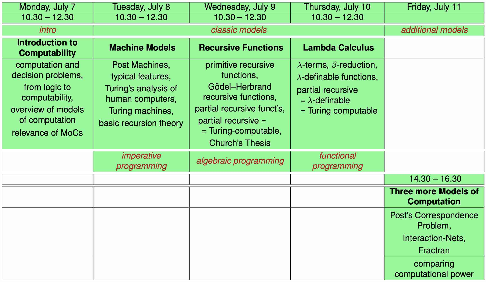

Models of Computation (Advanced Course 2024 – 25)
Lecturer
Room
-
Library, Ex-INPS building, GSSI, L'Aquila.
Lecture times
-
Monday, July 7, 10.30—12.30
-
Tuesday, July 8, 10.30—12.30
-
Wednesday, July 9, 10.30—12.30
-
Thursday, July 10, 10.30—12.30
-
Friday, July 11, 14.30—16.30
Overview at a glance

Course Aims
The course aims at familiarizing attendees with basic concepts of computability theory and with several and diverse models of computation. Following the historical development, three classical models will be presented first:
-
Turing machines,
-
recursive functions,
-
Lambda Calculus.
Subsequently, more recent models in computer science and other fields like science and biology will be mentioned.
The focus will be on understanding underlying intuitions rather than on exhaustively formal presentations. Specific attention will be directed to:
-
the comparison of the computational power of different models by finding, whenever possible, simulations between them, modulo reasonable encodings.
By recognizing that some quite disparate models are computationally equally powerful, we will survey some of the ample empirical evidence that computability is a fundamental concept, the Church-Turing Thesis: every informally computable function is Turing-computable (and equivalently, is definable in Lambda Calculus), modulo reasonable encodings.
Lectures
-
Introduction and Overview
(slides (handout version),
slides (with overlays))
-
Post and Turing machines, Turings analysis of computability
(slides (handout version),
slides (with overlays))
-
Partial-Recursive Functions
(slides (handout version),
slides (with overlays))
-
Lambda Calculus
(slides (handout version),
slides (with overlays),
handout from-recursive-to-λ-definable)
-
Three More Models
(slides (handout version),
slides (with overlays),
handout comparing computational power)
Book
-
Maribel Fernández:
Models of Computation
(An Introduction to Computability Theory),
Springer-Verlag London, 2009.
Links to Further Resources
-
Böhm's full precision calculator and Recursive Real Analysis (RRA):
-
Popular science article by Chad Nauseam (link)
-
Post machines, and Post's computability `working hypothesis':
-
Emil Leon Post: "Finite Combinatory Processes — Formulation 1"
(pdf via wolframscience),
The Journal of Symbolic Logic, Vol. 1, No. 3. (Sep., 1936), pp. 103-105.
-
Turing, and Turing machines:
-
Alan M. Turing: "On Computable Numbers, with an Application to the Entscheidungsproblem"
(pdf via wolframscience),
Proceedings of the London Mathematical Society, 1936.
- General interest (recent report):
Wartime codebreaker Alan Turing’s scientific papers sell for £465,000 at auction (Guardian article, Tue 17 Jun 2025)
-
Mike Davey's Turing Machine ``embodying the classic look and feel of a Turing machine''
(link youtube)
-
The LEGO Turing Machine
(link youtube)
-
Church's thesis and effective calculability:
-
From partial recursive functions to λ-definable functions:
-
Comparing computational power of models of computation
-
Handout (pdf).
-
Udi Boker, and Nachum Dershowitz:
"Comparing Computational Power",
Logic Journal of the IGPL
(pdf report-version via arXiv ).
-
Jörg Endrullis, Clemens Grabmayer, and Dimitri Hendriks:
"Regularity-Preserving but not Reflecting Encodings",
Proceedings of LICS 2015
(pdf,
pdf report via arXiv).
-
Post's Correspondence Problem:
-
Emil Leon Post:
"A Variant of a Recursively Unsolvable Problem",
Bulletin of the American Mathematical Society, 1946
(pdf via projectEuclid).
-
Interaction Nets:
-
Yves Lafont: "Interaction Nets", Proceedings of POPL'90, 1990
(pdf via ACM).
-
Fractran:
Clemens Grabmayer
/
www:
https://clegra.github.io
/
mailto:
c one dot
a one dot
grabmayer one at
gmail one dot
com
/
Last modified: Wed 9 Jul 2025 13:25 CEST
/ /
/